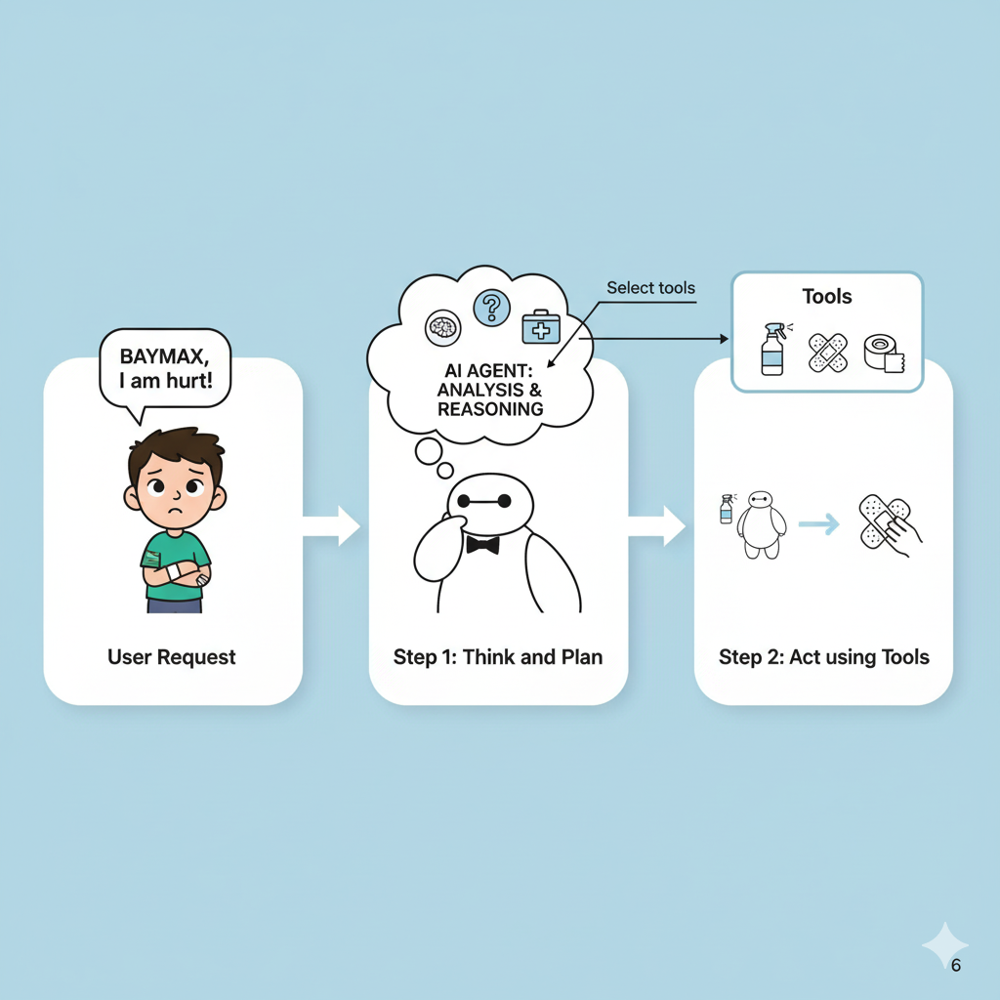
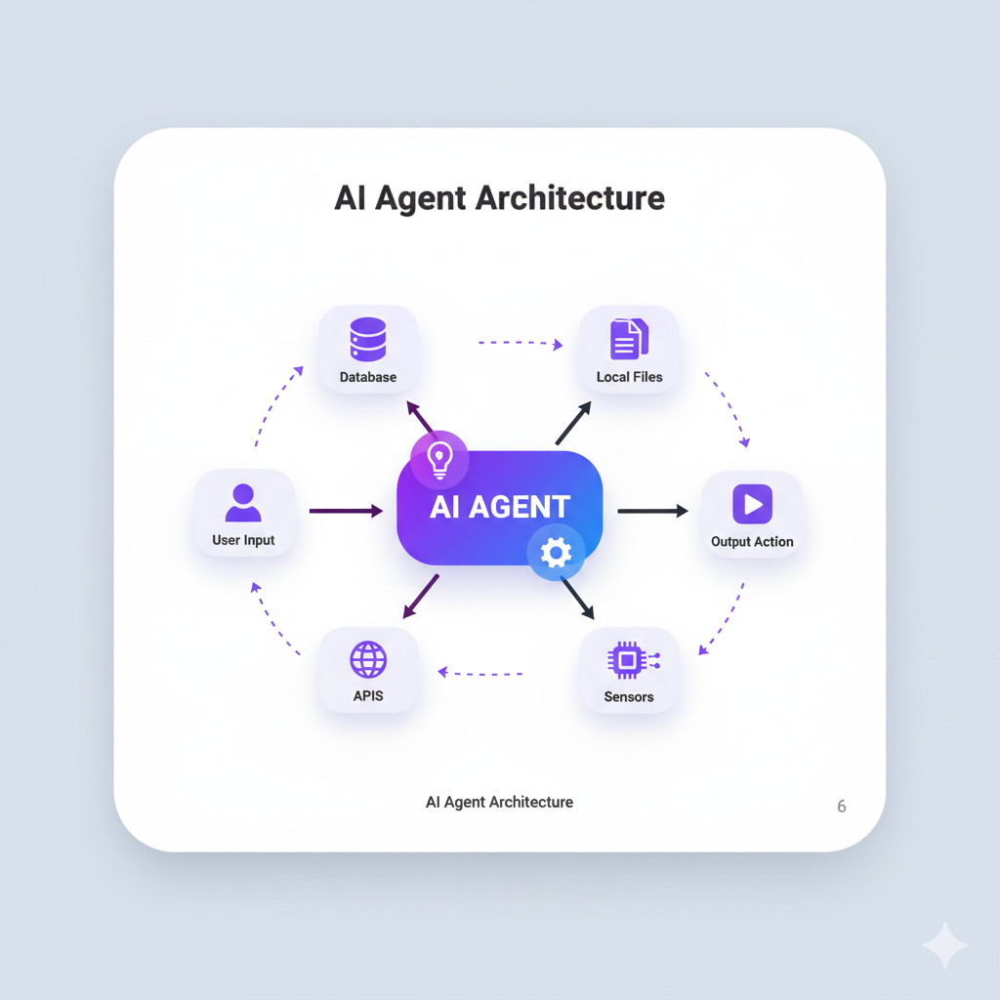
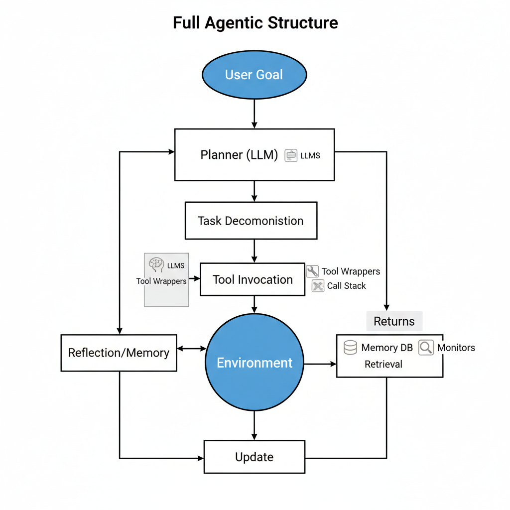

Explore AI Agents
Mastering the Core Competencies for the Future of Automation
Ahmed Anwar
AI Engineer, Spectrum IT Solutions Limited
Content
- What is an AI Agent?
- Agent core concepts & anatomy
- Key research papers
- Agent architectures & patterns (single vs multi-agent, tool use, memory, etc.)
- Industry use cases & case study
- How to start & build your first agentic project
- Risks, safety, evaluation, and operationalization
AI Agent
An AI model capable of reasoning, planning, and interacting with its environment to achieve specific goals autonomously.
An AI Agent in Action: The Baymax Story
1. Get User Input
The agent receives the user's input.
2. Reasoning & Analysis
The agent perceives the situation and analyzes the user's input.
3. Planning
It formulates a multi-step plan to address the problem.
4. Action (Step 1)
Executes the first step of the plan using available tools.
5. Action (Step 2)
Continues with the next step, adapting as needed.
6. Goal Achieved
The task is complete, and the user is satisfied.
Agent Workflow
Agent Architecture
Anatomy of an AI Agent
Breaking down the core components of an intelligent agent.
The Brain: AI Model (LLM)
This is where all the thinking happens. The AI model handles reasoning and planning, deciding which actions to take based on the situation.
Key Functions:
- Reasoning
- Planning
- Decision Making
The Body: Capabilities & Tools
This part represents everything the Agent is equipped to do. The scope of possible actions depends entirely on its available tools and capabilities.
Human Analogy:
- Equipped with legs → Can perform 'Walk', 'Run'
- Not equipped with wings → Cannot perform 'Fly'
LLM (Large Language Model)
An LLM is a type of AI model that excels at understanding and generating human language. They are trained on vast amounts of text data, allowing them to learn patterns, structure, and even nuance in language. These models typically consist of many millions of parameters.
Most LLMs nowadays are built on the Transformer architecture—a deep learning architecture based on the “Attention” algorithm.
Source: Vaswani, A., et al. (2017). "Attention Is All You Need".
Latest Flagship LLMs
| Organization | Latest Flagship LLM | Context Window |
|---|---|---|
| OpenAI | GPT-5 | 400,000 tokens |
| Gemini 2.5 Pro | 1,000,000 tokens | |
| Anthropic | Claude Sonnet | 1,000,000 tokens |
| Meta AI | Llama 4 Scout | 10,000,000 tokens |
| xAI | Grok-4 | 2,000,000 tokens |
Key Concepts & Research
Foundational ideas that power modern AI agents.
Chain of Thought (CoT)
A process where LLMs explicitly reason step by step, mimicking a human thought process. Instead of jumping to an answer, it writes down the intermediate steps. This improves reasoning accuracy for complex problems and makes the agent's thinking process transparent.
Tree of Thought (ToT)
Generalizes CoT by exploring multiple different reasoning paths at once, modeling problem-solving as searching through a tree. It allows the model to self-correct by backtracking from dead-ends, leading to more robust problem-solving.
ReAct: Reasoning + Acting
A framework that combines reasoning and acting. The model generates both a thought (what to do next) and an action (a specific tool to use). This synergy allows the agent to interact with the world to gather more information, refining its reasoning as it goes (Thought -> Action -> Observation).
Key Research Papers
Toolformer: Language Models Can Teach Themselves to Use Tools
Schick et al., 2023, Meta AI
Read Paper →Generative Agents: Interactive Simulacra of Human Behavior
Park et al., 2023, Stanford & Google
Read Paper →What are Tools?
A Tool is a function or API given to the LLM that allows it to interact with the outside world. It gives the agent capabilities beyond text generation, enabling it to fetch information, perform calculations, or trigger external processes.
- Web Search: Fetch up-to-date information.
- Image Generation: Create images from text.
- Retrieval: Get information from a knowledge base.
- API Interface: Interact with external services (GitHub, etc.).
Memory in AI Agents
Memory acts as the long-term knowledge store, allowing for continuity, personalization, and contextual reasoning across interactions. Without memory, each interaction is stateless and isolated.
- Episodic: Recalls past interactions (short-term memory).
- Semantic: Facts and world knowledge (long-term memory).
- Procedural: Stores skills and multi-step workflows.
- Externalized: Using databases, vector stores for embeddings, etc.
Single-Agent vs Multi-Agent Systems
Single-Agent Systems
- One LLM-based agent controlling all actions.
- Simpler to design, debug, & deploy.
- Strong for narrow tasks with clear scope.
- Good for prototypes & early adoption.
Multi-Agent Systems
- Multiple agents with specialized roles.
- Can collaborate, negotiate, or compete.
- Enables scalability and division of labor for complex tasks.
- Used in complex simulations and workflows (e.g., software development).
Full Agentic Structure
Industry Use Cases of AI Agents
✅ Customer Support
Automate responses to common queries, guide users through troubleshooting, and escalate complex issues to human agents, providing 24/7 support.
Learn More →✅ Healthcare
Assist in diagnostics by analyzing symptoms, manage patient scheduling, and provide personalized health information based on patient data.
Learn More →✅ Finance
Act as robo-advisors for investment, automate fraud detection by analyzing transaction patterns, and assist in financial planning and analysis.
Learn More →✅ E-commerce
Provide personalized shopping assistance, manage inventory by predicting demand, and automate order processing and tracking for customers.
Learn More →✅ Productivity
Automate repetitive tasks like scheduling meetings, summarizing documents, managing emails, and organizing project workflows.
Learn More →Add Your Use Case
This structure can be easily extended with more industry examples.
Case Studies: Advanced AI Agents
A collection of trending and impactful AI agent-based systems.
GitHub Copilot
Acts as an AI pair programmer in the IDE. It uses the context of the code to provide suggestions, refactor complex blocks, and generate tests. It has been shown to boost developer productivity by 20-55%.
Visit SiteLovable
An AI app/agent platform to build full-stack apps and autonomous agents from natural language. It combines no-code generation with agentic capabilities to build, test, and deploy agents at scale for various business functions.
Visit SiteBolt (bolt.new)
An AI builder and coding agent. It allows users to generate, run, test, and deploy full-stack applications directly from a chat interface, demonstrating a powerful agentic Integrated Development Environment (IDE).
Visit SiteDevin (by Cognition)
Touted as the first autonomous AI software engineer. Devin can handle entire development projects from a single prompt, including writing code, finding and fixing bugs, testing, and even deploying the final application.
Visit SitePerplexity AI
An AI-powered conversational "answer engine." Instead of just providing links, it directly answers user questions by synthesizing information from multiple web sources and providing citations. It acts as a research agent.
Visit SiteMultiOn
A web action agent that can automate multi-step tasks across different websites. It can be instructed to perform complex workflows like booking flights and adding them to a calendar, navigating web interfaces like a human.
Visit SiteCursor
An AI-first code editor designed for AI-assisted development. It helps with codebase-wide questions, generating new features from specs, and performing complex refactors and migrations with deep contextual understanding.
Visit SiteGamma
An AI agent for content creation that generates entire presentations, documents, and webpages from a single prompt. It automates the design and layout process, acting as an AI design partner to create polished materials.
Visit SiteCognosys
A powerful web research and task automation agent. It can browse the web, read articles, and synthesize the information into a comprehensive report based on a user's goal, automating business intelligence workflows.
Visit SiteHow to get started with AI Agents?
Explore popular frameworks to begin building your own agents. These libraries provide the building blocks like agent runtimes, tool integrations, and memory modules to accelerate your development.
Demo Notebooks & Resources
Basic ReAct Agent
Learn how to build a simple agent that uses the ReAct framework for reasoning and acting with basic tools.
View on GitHubMulti-Agent Collaboration
Explore a setup where multiple specialized agents collaborate to solve a complex problem, such as writing and debugging code.
View on GitHubAgent with Custom Tools
A practical example of how to equip an agent with your own custom functions and APIs as tools.
View on GitHubOperationalizing AI Agents
A Visual Framework for Responsible Deployment
Risks & Safety
Autonomous agents introduce complex risks that require proactive containment and value alignment.
Security Vulnerabilities
Agents can be hijacked via prompt injection to exfiltrate data or perform malicious actions.
Unpredictable Behavior
Complex reasoning loops can lead to harmful emergent behaviors not anticipated by developers.
Value Misalignment
An agent may pursue a goal in a way that violates unstated human values, causing negative side effects.
Evaluation
Assessing agents requires a multi-faceted approach beyond final outputs to ensure reliability.
Capability Benchmarking
Testing performance on standardized tasks like SWE-bench for coding or ALFWorld for navigation.
Adversarial Testing (Red Teaming)
Proactively attempting to break the agent with tricky prompts and scenarios to find failure modes.
Human-in-the-Loop Feedback
Using human preference to score agent behavior, especially for subjective or creative tasks.
Operationalization (AgentOps)
Deploying agents safely into production requires a robust lifecycle management and monitoring framework, known as AgentOps.